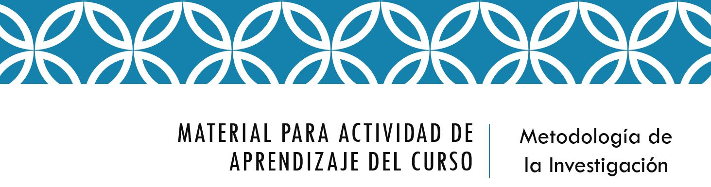
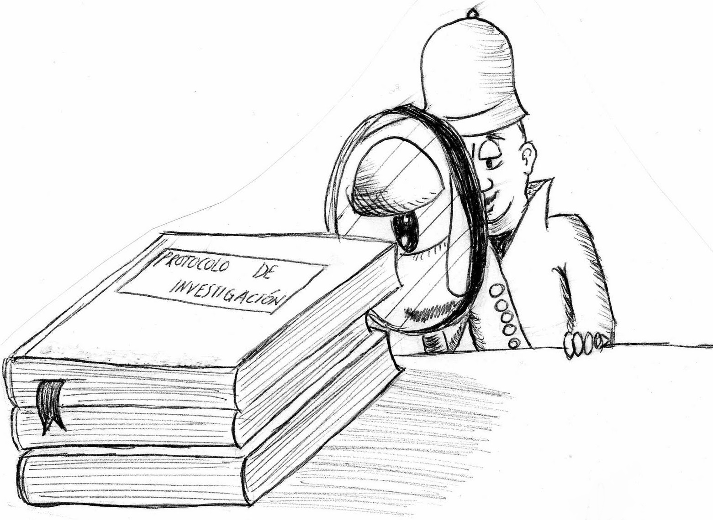

Actividad de aprendizaje 5-6: Etapa 1 del Protocolo de Investigación
ETAPA 1 Protocolo de Investigación

La actividad te llevará a identificar los elementos del Protocolo de Investigación en su primera ETAPA: Introducción, Planteamiento del Problema e hipótesis, Justificación, Objetivos (General y Específicos).
Una vez clarificados los conceptos sobre el tema, se iniciará con el diseño de un proyecto de investigación que te permita abordar problemáticas sociales de tu contexto.
Explora la información que se te otorga, tanto directamente en la pantalla como a través de textos realzados en azul.

Obra publicada con Licencia Creative Commons Reconocimiento Compartir igual 4.0